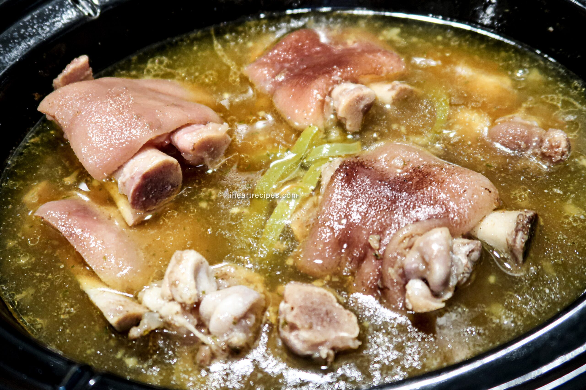

Pig's Feet

Description
Pig's feet is easy to make. You have to make sure that you let it stew long enough, and that you add sugars and acids to break down the tough flesh.
It is one of my personal favorite recipes.
Ingredients
- 2 lb pig's feet
- 1 can Coca-Cola
- Salt
- Bay Leaf
Steps
- Bring water to a boil.
- Add bay leaf and pig's feet.
- Once the water is once again at a rolling boil, add Coca-Cola. Bring heat down to a simmer.
- Wait 2 hours and serve hot.